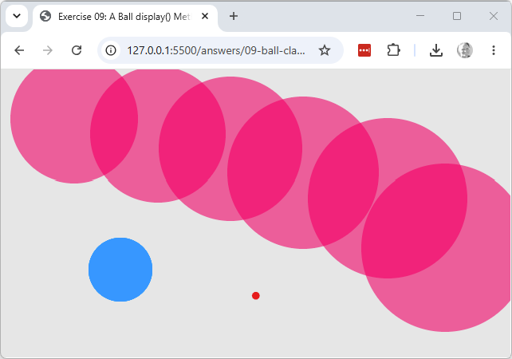

Explore & modify
Working copy: exercises/09-ball-class/.
- Add a new method to the
Ballclass, e.g.grow(amount)that increasesthis.diameter. Callball.grow(10)each time the mouse is clicked, alongsideball.display(). - Create a second
new Ball(...)instance, stored in a second variable, and call.display()on both frommousePressed(). (Notice how awkward this still gets with more balls — arrays next.)
